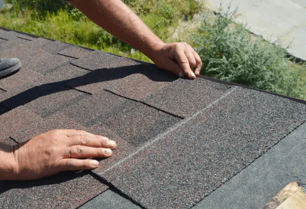

Which Is Better For Your Home?
Having a sturdy and reliable roof over your head is crucial for safeguarding your home against the elements. However, as with all things, roofs are not immune to the ravages of time and environmental wear. Over the years, your asphalt shingle roof may succumb to the effects of weather, age, and other factors. Understanding whether your roof needs a simple repair or a full replacement can save you not only time and money but also a great deal of stress.
In this guide, we’ll delve into the signs that indicate whether you need asphalt shingle repair or a complete roof replacement.
Missing or Damaged Shingles
Missing or damaged shingles are often the first red flags that your roof needs some attention. Strong winds, heavy rains, or hail can dislodge or damage shingles, leaving your roof vulnerable to leaks and further deterioration. When you notice a few missing or cracked shingles, it typically indicates a need for localized repairs. A prompt repair can prevent the problem from escalating into a more significant issue, saving you from more extensive damage and higher costs down the line.
In some cases, shingles can also become loose due to improper installation. Even if the number of missing or damaged shingles seems minimal, it’s essential to have a professional roofer assess the situation. They can determine if the issue is isolated or a sign of a more widespread problem with your roof’s integrity.
Leaking Roof
A leaking roof is a common issue that can often be resolved with timely repairs. If you notice water stains on your ceiling or walls, it’s crucial to address the problem quickly to prevent further damage, such as mold growth or structural damage. A professional roofer can identify the source of the leak, which can sometimes be tricky, and make the necessary repairs to seal your roof effectively.
Granule Loss
Granules on asphalt shingles serve a dual purpose: they protect the shingles from harmful UV rays and add weight, helping them stay in place during storms. Over time, you might notice granules accumulating in your gutters, which can be an early sign of wear. If the loss is minimal, a repair can suffice, but extensive granule loss may indicate a need for replacement, as it can compromise the shingles’ effectiveness and lifespan.
Curling or Buckling Shingles
Shingles that are curling or buckling can expose your roof to the elements, leading to leaks and further damage. This curling or buckling can be caused by various factors, such as age, moisture, or improper installation. If this issue is isolated to a small area, repair is an option. However, widespread curling or buckling may require more extensive work, as it indicates underlying issues that could affect the entire roof’s integrity.
The presence of curling or buckling shingles can also be a sign of inadequate ventilation in your attic, which can cause moisture buildup and subsequent shingle damage. Addressing this issue promptly can prevent further deterioration and ensure the roof’s longevity. Consulting a professional roofer can help you determine the best course of action based on the extent of the damage.
Signs You Need a Full Roof Replacement

Extensive Damage
If your roof has extensive damage, such as widespread missing shingles or significant leaks, a full roof replacement might be necessary. This is especially true if the damage affects the integrity of the roof structure, putting your home at risk of further damage. When the overall condition of the roof is compromised, repairs may only provide a temporary solution.
In cases of extensive damage, a new roof can offer a fresh start and peace of mind, knowing that your home is well-protected. A full replacement also allows you to upgrade to modern materials and technologies that can enhance your roof’s performance and energy efficiency.
Age of the Roof
If your asphalt shingle roof is nearing the end of its expected lifespan, it might be more cost-effective to replace the entire roof rather than perform multiple repairs. As roofs age, they become more susceptible to damage and less effective at protecting your home. A new roof can improve your home’s energy efficiency and curb appeal, adding value to your property.
An aging roof may also be prone to problems such as increased granule loss, curling shingles, and leaks. Replacing an old roof can eliminate these issues and provide you with a durable solution that will last for many years. When considering the age of your roof, it’s essential to weigh the benefits of a new installation against the costs of ongoing repairs.
Continuous Repairs
If you find yourself frequently repairing your roof, it might be time to consider a replacement. Constant repairs can add up in cost, and a new roof can offer peace of mind and long-term savings. A pattern of recurring issues often indicates underlying problems that cannot be resolved with simple repairs alone.
Opting for a new roof can address these persistent issues and ensure that your home is adequately protected. It also presents an opportunity to choose updated materials and technologies that can improve your home’s energy efficiency and aesthetic appeal.
Sagging Roof
A sagging roof can be a sign of structural issues, which may require a full replacement. This problem is often caused by water damage, inadequate support, or excessive weight on the roof. A sagging roof not only compromises your home’s appearance but also its safety, as it may be at risk of collapse.
Addressing a sagging roof promptly is crucial to avoid further structural damage and potential hazards. A professional roofer can assess the extent of the sagging and recommend the best course of action, which often involves a full roof replacement to restore your home’s structural integrity.
The Benefits of a Free Roof Inspection
Before deciding on repairs or a replacement, consider getting a free roof inspection. A professional inspection can provide an accurate assessment of your roof’s condition and help you make an informed decision. Many residential roofing companies offer complimentary inspections, which can be a valuable resource. These inspections can identify hidden problems that may not be immediately apparent, allowing you to address them before they worsen.
A free inspection also gives you the opportunity to ask questions and explore your options with a knowledgeable professional. This insight can help you weigh the pros and cons of repairs versus replacement, ensuring that you choose the best solution for your home and budget. Taking advantage of free roof inspections can ultimately save you time and money by preventing costly surprises down the road.
Conclusion
Deciding whether to repair your asphalt shingles or replace your roof entirely can be challenging. By recognizing the signs of damage and consulting with a trusted professional, you can make the best choice to protect your home and investment. At EZ Roofing, we offer free roof inspections to help you assess your roof’s condition with confidence. Don’t wait—schedule your complimentary inspection today and take the first step toward a safe, reliable roof that will serve you well.